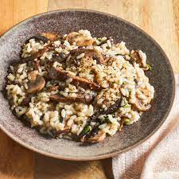

Mushroom Risotto

Creamy mushroom risotto
Risotto (/rɪˈzɒtoʊ/, Italian: [riˈzɔtto, -ˈsɔt-], from riso meaning "rice")[1] is a northern Italian rice dish cooked with broth until it reaches a creamy consistency. The broth can be derived from meat, fish, or vegetables. Many types of risotto contain butter, onion, white wine, and Parmigiano-Reggiano. It is one of the most common ways of cooking rice in Italy. Saffron was originally used for flavour and its signature yellow colour.[2
Ingredients
- 1 Handful fresh parsley
- 100g butter
- 1 brown onion
- Portobello mushrooms
- 1 glove galic
- 20g parmesan cheese
- 600ml chicken broth
- 200g Arborio rice
- Sweet vermouth
Steps
- Finely dice both the garlic and onion and in a mdeium sauce pan cook until golden brown
- Slice mushrooms finely and add to onions and cook until brown, add sweet vermouth and reducedown
- Once all moisture is gone add 1/2 a cup of chicken broth and reduce before adding all the rice.
- Continuously stir rice adding 1/2 cup of liquid when it begins to stick to the bottom of the pan.-Repeat this step until all broth is used.
- Add butter and half of the parmesan and parsley to the pan and stir well.
- serve into small bowls seasoning well with salt and pepper and garnish with the rest of the parmesan and parsley.
Home